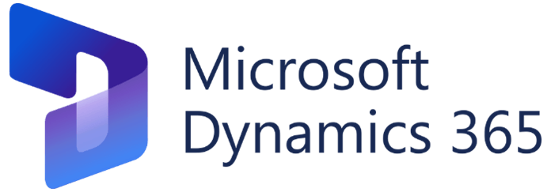

منهجية Microsoft لـتنفيذ المشاريع
تعتمد منهجيتنا على دمج أفضل الممارسات من إطار عمل Sure Step من مايكروسوفت، والذي يوفر هيكلية قوية وتوثيقًا دقيقًا لمراحل تنفيذ مشاريع Dynamics ERP، مع مرونة وسرعة استجابة منهجية Agile. هذا الدمج يضمن تسليم مشاريع عالية الجودة، موثقة بشكل كامل، وقادرة على التكيف مع التغييرات المستمرة لضمان تحقيق أقصى قيمة للعميل.
تحليل الوضع الحالي والمستهدف (AS IS - TO BE Analysis)
الوضع الحالي
AS-IS
الوضع المستهدف
TO-BE
يوضح هذا الرسم البياني العلاقة بين الوضع الحالي (AS IS)، الفجوة (GAP)، والوضع المستهدف (TO BE)، ضمن مراحل المشروع.
مراحل مشروع Sure Step
استكشف المراحل الــ 6 الرئيسية لمنهجية Sure Step. انقر على كل مرحلة لمعرفة اسمها ووصفها المختصر.
المرحلة الرسمية لإطلاق المشروع، توحيد الرؤية، وتحديد الهيكل والمسؤوليات.
تحليل المتطلبات التفصيلية، دراسة الإجراءات الحالية، وتحديد الفجوات للنظام الجديد.
تحويل المتطلبات المحللة إلى تصميم وظيفي وتقني مفصل، وإعداد خطط التطوير والتكامل.
تجهيز النظام فعليًا بتهيئة الإعدادات، تطوير التخصيصات، وتنفيذ التكاملات.
تسليم النظام للعميل للتجربة والموافقة النهائية، يشمل UAT وتدريب الموظفين.
تقديم الدعم الفني والتشغيلي بعد الإطلاق، مراقبة الأداء، ومعالجة المشكلات لضمان الاستمرارية.
مراحل المشروع الـ 6
ينقسم المشروع إلى ست مراحل رئيسية، لكل منها أهدافها وأدوارها ومخرجاتها المحددة. تم تصميم هذه المراحل لضمان تغطية جميع جوانب المشروع من البداية إلى التشغيل. يمكنك التنقل بين المراحل لاستكشاف تفاصيل كل منها.
المرحلة الأولى: 📍 Initiation – بدء المشروع
هي المرحلة الرسمية التي يتم فيها إطلاق المشروع بشكل معتمد، ويجتمع خلالها فريق Paradise مع القيادات العليا من الجهة الحكومية لعرض نطاق العمل، توحيد الرؤية، وتحديد الهيكل التنظيمي والمسؤوليات.
🎯 أهداف المرحلة:
- التمهيد الرسمي لبدء المشروع أمام القيادات المعنية
- عقد اجتماع الانطلاقة الرسمي (Kickoff Meeting)
- بناء هيكل المشروع من حيث فرق العمل والأدوار
- توحيد المفاهيم حول أهداف المشروع والمخرجات المتوقعة
- الاتفاق على خطة التواصل وآلية إدارة التغيير
🔄 ممارسات Agile داخل المرحلة:
- جلسات مصغرة (Workshops) لتوضيح أولي للاحتياجات
- إعداد لوحة متابعة أولية (Task Tracker – Excel أو DevOps)
- جمع ملاحظات واقتراحات مباشرة من المستخدمين الرئيسيين
👥 الأدوار المشاركة:
| الدور | المهام الرئيسية |
|---|---|
| Project Manager (Paradise) | قيادة الاجتماع الافتتاحي، عرض خطة العمل، إدارة النطاق الزمني |
| Customer Sponsor (العميل) | تأكيد الالتزام والدعم السياسي والفني للمشروع |
| Functional Consultant | تجميع المعلومات التمهيدية، إعداد ملفات التقديم والعرض |
| Technical Lead (اختياري) | مراجعة البنية التحتية الأولية إن تطلب الأمر |
📁 المخرجات (Deliverables) الرسمية:
| المستند | الوصف |
|---|---|
| Kickoff Presentation | عرض تقديمي رسمي يشمل أهداف المشروع، الفرق، التسلسل الزمني |
| Stakeholder Matrix | تحديد جميع الأطراف، أدوارهم، ومسؤولياتهم |
| Project Charter | وثيقة تأسيس المشروع، تتضمن النطاق المبدئي، الجدول الزمني، والميزانية |
| Communication Plan | خطة التواصل بين الفرق، تحديد آلية الاجتماعات والتقارير |
| Diagnostic Summary (اختياري) | تحليل أولي لحالة الجهة وإمكانية تكييف النظام معها |
✅ ملاحظات خاصة بمشاريع Paradise:
- هذه المرحلة غالبًا ما تعقد في مقر العميل بحضور محافظ، وكلاء وزارات، أو رؤساء إدارات مركزية.
- يتم التأكيد خلالها على أن المشروع مدعوم رسميًا من الجهة الحكومية، وهو عامل نجاح رئيسي.
- يتم عرض النسخة المبدئية من خطة العمل وتوثق الموافقات الأساسية كتابيًا.
الأدوار والمسؤوليات
نجاح أي مشروع يعتمد على تحديد الأدوار والمسؤوليات بوضوح. انقر على كل دور لاستكشاف مسؤولياته بالتفصيل.
مدير المشروع
القيادة، التخطيط، وإدارة المخاطر لضمان نجاح المشروع.
الاستشاري الوظيفي
تحليل المتطلبات، إعداد الوثائق، وتدريب المستخدمين.
المطورين
تنفيذ التخصيصات، بناء التكاملات، وإعداد البيئات الفنية.
المستخدمون الرئيسيون
توضيح العمليات، اختبار النظام، واعتماد التسليمات.
علاقات العمل المتبادلة
| الطرف | يتعاون مع | طبيعة التعاون |
|---|---|---|
| مدير المشروع | الجميع | التنسيق والمتابعة |
| الاستشاري الوظيفي | المستخدمون الرئيسيون، المطورون | تحليل وتصميم واختبار |
| المطورون | الاستشاري الوظيفي | تنفيذ وتطوير |
| المستخدمون الرئيسيون | الاستشاري الوظيفي | تحليل واختبار وتدريب |
الدمج عمليًا: كيف يعزز Agile منهجية Sure Step
يكمن سر نجاح منهجيتنا في الدمج الذكي بين الهيكلية والمرونة. هذا الرسم البياني يوضح كيف يتم تطبيق ممارسات Agile لتعزيز وتسريع المراحل والأنشطة المختلفة في منهجية Sure Step التقليدية. مرر الفأرة فوق الأعمدة لرؤية التفاصيل.